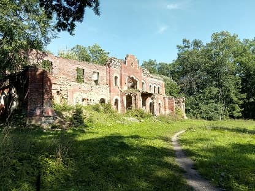
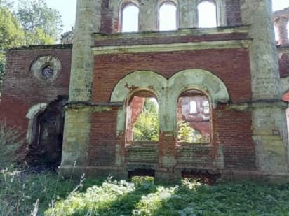
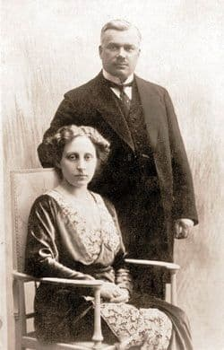
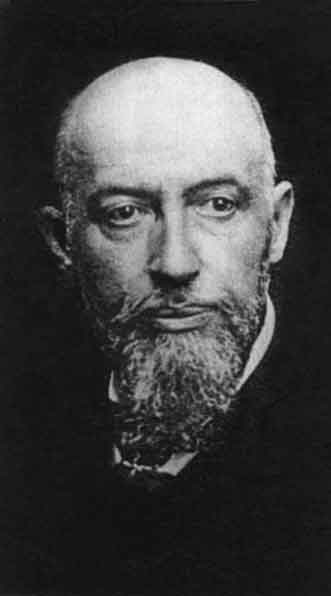
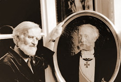

В Торосово Волосовского района до сих пор сохраняются развалины настоящего рыцарского замка, если восстановить фантазией то, что от него осталось. Последние законные владельцы - представители одной из ветвей многочисленного дворянского рода Врангелей.
Корни рода Врангель датские, но большая его часть служила России с Елизаветинских времен.
Среди представителей: 18 генералов, 2 адмирала, министры, сенаторы, профессора, губернаторы.
Так сложилось, "веточка" европейского рода Врангель, которой было суждено оказаться "у нас", оставила весомый след в мировой истории.
Именем вице-адмирала Фердинанда Петровича Врангеля назван остров в Северном Ледовитом океане, горы, вулкан, бухта.
Генерал-лейтенант Петр Николаевич Врангель, один из лидеров Белого движения, Главнокомандующий русской армией в Крыму - двоюродный брат последнего владельца усадьбы Георгия Михайловича Врангеля.
Отец генерала Врангеля, Николай Егорович, прожил жизнь, которую описал в книге "Воспоминания. От крепостного права до большевиков". Не знаю лучшего учебника истории для желающих ее знать.
А его отец, Егор Ермолаевич Врангель, лейб-гвардеец, участник войны с Турцией и подавления Польского восстания, раненый и награжденный, памятный императору Николаю I лично, лежал в Раскулицах, пока мы не выпотрошили его могилу.

Красно-белый красавец-замок возводился в середине XIX века "с нуля" для семьи генерал-губернатора Лифляндии Михаила Георгиевича Врангеля: садово-парковый ансамбль, сложенные из крупного булыжника хозяйственные дворы, конюшни, амбары, скотные дворы. Имение считалось одной из дворцовых жемчужин усадебного ожерелья Санкт-Петербурга.



">
Фрагмент из замечательной книги дяди Георгия Михайловича, Николая Егоровича "Воспоминания. От крепостного права до большевиков".
Это отец генерала Петра Врангеля, последнего главнокомандующего Русской армией.

"Семья моего покойного брата Михаила погибла целиком. Его жена умерла от истощения, один из сыновей погиб при Цусиме, остальные сыновья были расстреляны.
О смерти одного из них, Георгия, стоит рассказать. Георгий с молодой женой и малолетними детьми безвыездно жил в своем Торосове, Петергофского уезда. Человек он был крайне добродушный и с крестьянами настолько ладил, что, когда имение было отобрано “в общую собственность”, он преспокойно остался жить в своей усадьбе. Ему и его семье выдавали, как и крестьянам, паек, оставили для пользования одну из его коров, дали лошадь. Так он прожил несколько месяцев. Но вот из фабрики вернулся в деревню сын его бывшего камердинера и начал дебоширствовать у него на кухне. После одного скандала племянник пригрозил ему выгнать его из дома.
— Выгонишь? Ну ладно. Увидим, кто кого!
Через несколько дней один из детей заболел. Лекарства добыть нельзя было, в квартире было холодно, племянница с ним переехала в детскую больницу, где кой-кто из старых докторов еще удержался. Когда доктор заявил, что надежды нет и мальчик должен умереть, сиделка собралась ребенка уносить.
— Что вы делаете? — спросила мать.
— В мертвецкую несу. Все равно околеет, что с ним тут еще маяться.
Доктор уехал, ординатора не было, и живого ребенка унесли в мертвецкую, переполненную трупами. Мать последовала за ним. К счастью, через час он скончался.
Дочери моей сестры пропали без вести. По слухам, одна расстреляна в Полтаве.
Дочь брата Георгия княгиня Куракина с малолетним сыном была в Киеве взята заложницей и в Москве посажена в тюрьму. Мальчика заточили в другой. Потом племянницу приговорили к смерти, но казнь была за большие деньги заменена вечной тюрьмой. Сын ее был выпущен, но пропал без вести. Отец ее мужа, князь Анатолий, — в тюрьме, жена его разбита параличом, внуки от другого сына голодают.
Племяннице моей сестры Араповой после разных ужасов удалось бежать в Болгарию, где она пробивается уроками. Сыновья ее тоже долго сидели в тюрьме, потом бежали и сражались в армии сына.
Племянники мои Врангель, Бибиков, Скалой, князь Ширинский-Шахматов убиты, старуха тетка Врангель большевиками зарыта живая, сыновья адмирала Чихачева расстреляны, племянницы Вогак, Алексеева, княгиня Голицына умерли от голода. Княгиня Имеретинская разбита параличом. Барон Притвиц тоже от голода ослеп, потом умер. Пришлось его, за отсутствием гробов, свезти в общую могилу в бельевой корзине, взятой напрокат. Генерал Пантелеев с женой тоже умерли от голода; бароны Нолькен всей семьей отравились; полковники Арапов и Аничков расстреляны — впрочем, к чему продолжать! Проще упомянуть о тех, которые еще остались в живых. Из всех моих родных и близких каким-то чудом уцелела жена, сын моего старшего брата, который не жил в России, Араповы, о которых уже упомянул, и только те из племянников и племянниц, которые до революции были за границей.
В России у меня больше родственников не осталось. Большевики мели чисто.
Иногда одно слово рисует лучше эпоху, чем целые многоречивые страницы. Одно из таких слов я услышал от древнего старика, лакея одного моего друга. Я слышал, что приятель мой скончался в Москве, но, при каких обстоятельствах, не знал. На улице я встретил старого слугу.
— Что это случилось с твоим барином?
— Да ничего особенного. Только расстреляли.
Только! Действительно, для времен большевизма — вещь самая обыкновенная, о которой не стоит говорить.
В дальнейшем, вдова Михаила перебралась в Петроград с детьми и няней. В результате неустановленных событий мать оставила детей на попечение няни, покинув Россию.
Семь лет няня растила троих детей, выдавая за собственных (как обычно, - имя ее история не сохранила).
Наконец, ей удалось переправить детей в Литву, где они воссоединились с мамой и переехали в Брюссель, там им помог устроиться дядя - генерал Врангель. В Бельгии баронесса работала ткачихой фабрике.
Умерла в 1943 году.
Казалось бы, нет причин иметь дело со страной изуверски уничтожившей почти всю семью. Но кривая судьбы распорядилась иначе.
Младший мальчик - Борис (1917 г.р.), выросший в Бельгии, во время войны возвращается в Россию в оккупированный Псков. Работает в Псковской духовной миссии цель которой восстановление православия и церковной жизни. При этом активно противостоит оккупационному режиму и имеет контакты с партизанами в Острове.
В 1945 г. его арестовывают в Латвии, приговаривают к 20 годам лагерей "за шпионаж и подготовку терактов против деятелей советской власти".
В середине 1950-х освобождают и он возвращается в Псков. К этому времени он уже имеет дочь.
В начале 90-х во Франции встречается со своими братом Львом и сестрой Ниной, приехавших из Канады.
Слова дочери об отце: - " Все эти годы папа работал на машзаводе и продолжал работать в пенсионном возрасте, хотя ему было уже тяжело, у него не хватало стажа из-за лагерей. Но все это время он не унывал, оставался оптимистом, тем более по характеру был очень добрым, простым, безотказным и отзывчивым человеком. Я часто вспоминаю, как в моем детстве папа играл со мной в разные игры, катался на лыжах, отвечал на все вопросы и вообще был моим другом."

На этом, история Петербургской ветви Врангель для меня прекращается.